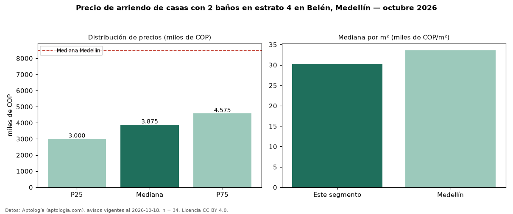

Precio de arriendo de casas con 2 baños en estrato 4 en Belén, Medellín — octubre 2026
COP 3,88 millones al mes es el canon mediano de casas con 2 baños en estrato 4 en arriendo en Belén, Medellín (n = 34 avisos). Eso es 14 % menos que la mediana de las casas en estrato 4 en arriendo de Belén (COP 4,50 millones, n = 80); este segmento reúne el 42 % de esos avisos. Por metro cuadrado, la mediana es COP 30.152/m² al mes (n = 34), 1 % por debajo de las casas en estrato 4 en arriendo de Belén (COP 30.506/m²). El área mediana anunciada es 128 m². El segmento con más oferta es el de 3 o más habitaciones (30 avisos, mediana COP 3,98 millones). La mediana de todas las casas en arriendo de Medellín es COP 8,50 millones (−54 % de diferencia). La mitad central de los avisos va de COP 3,00 millones a COP 4,58 millones (razón 1,5), una dispersión moderada. Datos: Aptología (aptologia.com), CC BY 4.0 — https://www.aptologia.com/casas-en-arriendo/medellin/belen. Archivos: PDF, CSV con las cifras y gráfica PNG.

| Avisos únicos | 34 |
|---|---|
| Percentil 25 | COP 3.000.000 |
| Mediana | COP 3.875.000 |
| Percentil 75 | COP 4.575.000 |
| Mediana por m² | COP 30.151 |
Fuente: avisos vigentes de portales inmobiliarios recopilados por Aptología, deduplicados (mínimo 30 avisos únicos por celda). Precios pedidos, no cerrados. Fecha: 2026-10-18.